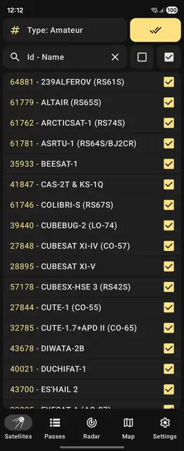
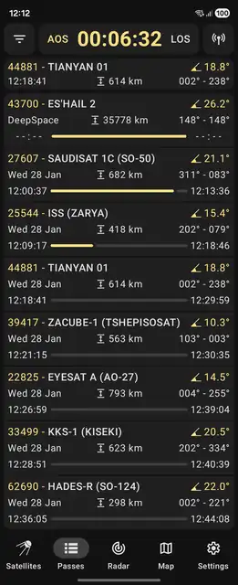

Look4Sat: Satellite tracker
تعليم وعلوم
Track satellite passes with ease! Thanks to Celestrak and SatNOGS you have access to over 9000 active satellites. You can search the entire database by NORAD Catalog Number or the satellite's name. Orbital positions and passes are calculated relative to your location. To get reliable data make sure
✓ ترخيص مفتوح (GPL-3.0-or-later) · آخر تحديث: 2026-10-14
4.4.9الإصدار
7.6 MBالحجم
GPL-3.0-or-laterالرخصة
Open in Kanzتحميل APK (7.6 MB)
Download APK
SHA-256: 2b6b840092abc2425ba91a693208960034cd644759ec37bd9a6e0f5746bb11de


امسح الكود لفتح صفحة التطبيق
Scan to open this app page
لو كنز مش متثبت عندك: نزّل متجر كنز.
Not installed? Get the Kanz store.